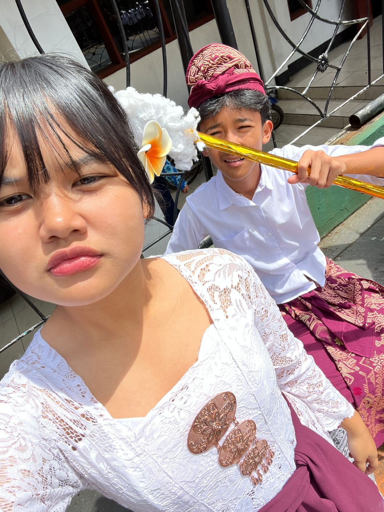
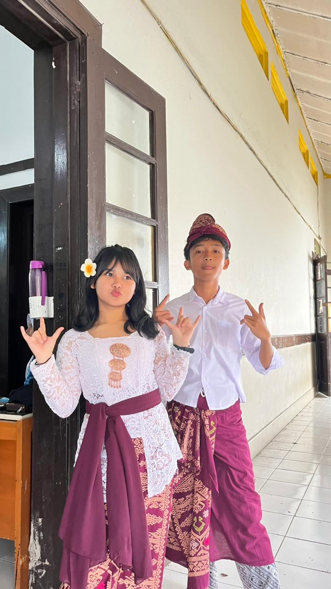
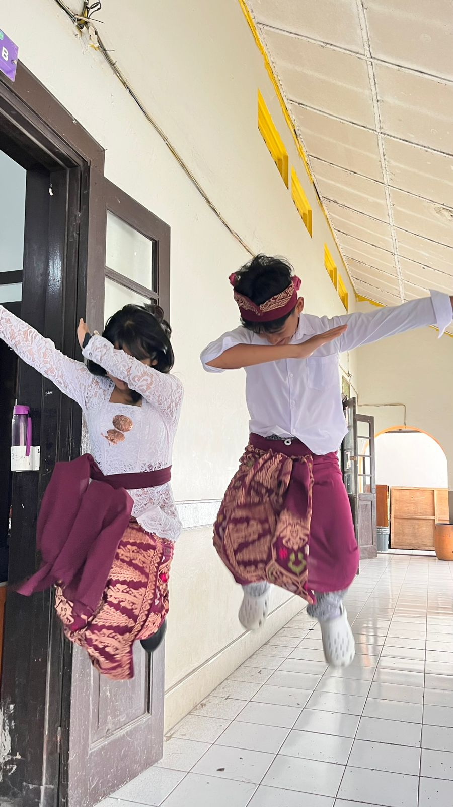
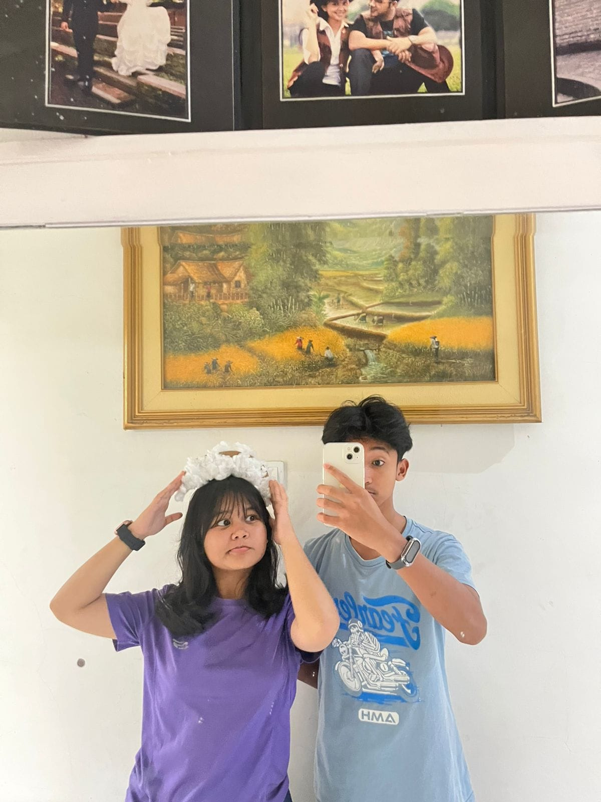
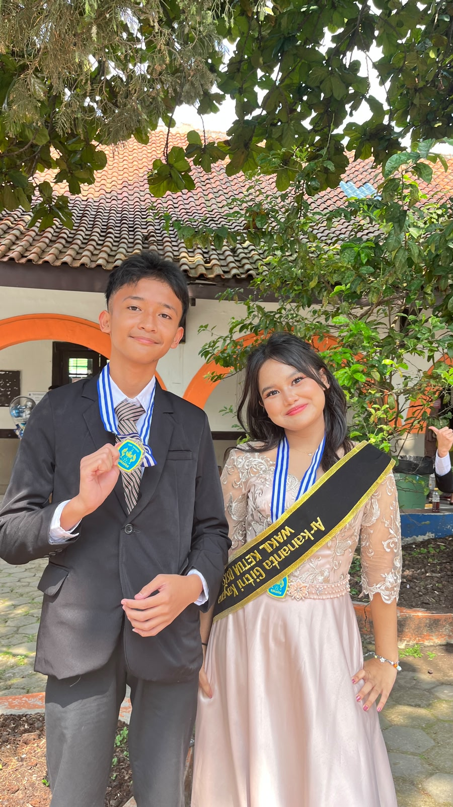

Masukkan 4 digit PIN keamanan rahasia untuk mendekripsi arsip data Arkan
Satu hari untuk merayakan umurmu, sejuta alasan untuk bersyukur karena mengenalmu :D
Akses arsip memori persahabatan kita.
Barangkali dunia terlalu terbiasa mengira kedekatan sebagai cinta, hingga lupa bahwa persahabatan pun mampu sedalam itu. Di antara riuh perasaan yang sering di cari manusia, kita menemukan "Tenang" dalam menjadi teman




Lagu yang cocok diputar sambil berayun menembus gedung-gedung kota.
Sedikit tentang arkan yang selalu aku ingat:
Dekripsi pesan terakhir...

Selamat ulang tahun, Arkan! 🥳
Aku harap di umur kamu yang baru ini, kamu lebih banyak bertemu kebahagiaan daripada kekecewaan, lebih banyak jawaban daripada kebingungan, & lebih banyak hal baik daripada yang kamu bayangkan.
Makasih banyak yaa Arkan karena kamu adalah sahabat laki-laki pertama aku sejauh ini. Makasih yaa udah jadi orang baik, makasih udah jadi diri kamu sendiri yang ga ada di orang lain. Mungkin aku ga selalu bilang, tapi aku sangat menghargai hal-hal baik dan semua momen-momen yang mungkin ga akan seru kalau ga ada kamunya.
Selamat & sukses yaa di sekolah barunya, in another life kita satu sekolah lagi kok, Ar! Tetap jadi Arkan yang aku kenal yaaaa. Mungkin nanti kita akan sedikit asing karena kamu sibuk, tapi kamu harus tau kalau aku selalu doain kamu biar kamu bahagia & semua urusan kamu dipermudah.
Makasih ya Ar untuk selalu isi hari-hari aku sama jokes-jokes kamu. Terimakasih karena jadi alasan aku hidup di dunia sampai saat ini, jujur sepertinya aku akan rindu. Kira-kira nanti siapa ya yang duduk di belakang bangku kamu? 🤔🤔
Terlepas apapun yang sudah terjadi, aku seneng banget bisa jadi sahabat kamu Arkan, aku bersyukur sekali bertemu kamu. Maafin kalau aku suka marah-marah & pundung sama kamu yaa.
AKU GA SABAR LIAT KAMU BOTAAKKK! 😭😂
Heheheh jangan lupa makan & istirahat yang cukup ya Arkan, jangan terlalu keras sama diri sendiri. Ini cuman dunia, menang kalah itu ada, tetap jadi orang baik yang suka bercanda ya arkaaan. Marah-marahnya dikurangin juga ya Ar, semoga kamu selalu punya alasan untuk tersenyum setiap hari.
Selamat ulang tahun sekali lagi. Makasih udah jadi partner yang membanggakan & sangat membantu selama ini. Aku sayang kamu sebagai teman! 💞